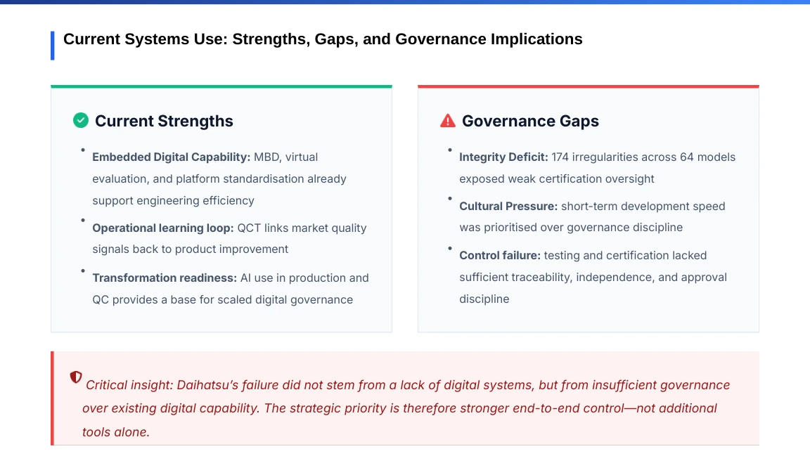
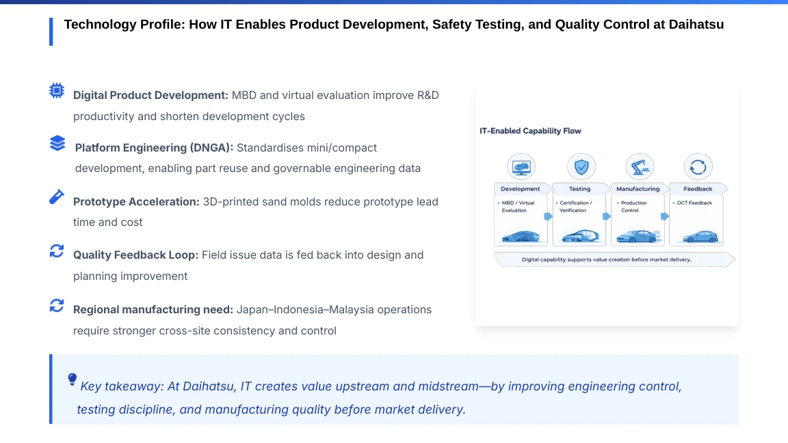

Academic strategy case · FIT3174 · 2026
IT Strategy & Governance
Translate risk themes into proposed controls, accountable roles and reviewable evidence.
- My role / scope
- Technology and systems-assessment contributions to a team strategy presentation; individual governance analysis and framework comparison.
- Evidence to inspect
- A risk-to-control summary and proposed approval evidence.
- Context
- Independent academic case analysis concerning Daihatsu; no commissioned or implemented system claimed.
Would you approve this evidence package?
Inspect mandatory evidence, record an independent review, then revise the source version to see why prior approval must be invalidated.
Proposed governance control simulation · academic analysis of Daihatsu · not an internal company system, implemented workflow or measured outcome.
Integrity depends on evidence and separation of duties.
Try reviewing with incomplete evidence, then check both items. The reviewer must review the current version.
Derived from the FIT3174 individual governance analysis and team coursework. Proposed control IDs, reviewer roles and evidence-version rules are portfolio illustrations. Selected original coursework slides are shown below; the broader evidence collection remains private.
Original project evidence
Inspect the work behind the proposal.
These original team slides are part of William’s documented technology-research and systems-assessment contribution. They preserve the coursework analysis.


Enlarge originalTeam presentation slide 4: strengths, gaps and governance implications. The source contribution record attributes this systems-assessment work to William.


Enlarge originalTeam presentation slide 3: William’s researched and prepared technology profile. Original coursework wording is preserved; this is not a current technical audit.

Connect the recommendation to evidence
| Risk theme | Proposed response | Evidence to review |
|---|---|---|
| Incomplete or unreliable approval evidence | Validate required evidence and separate independent review. | Complete package, signed review and approval history. |
| Inconsistent practices across teams | Versioned standards and corrective-action knowledge. | Approved process versions and action closure records. |
| Pressure to bypass controls | Explicit escalation and traceable exception handling. | Decision logs and independent exception review. |
Use frameworks with judgement
The coursework applies COBIT and compares ITIL as a complementary operational lens. Proposed KPIs need agreed definitions and baselines; numerical targets are proposals, not observed results. A real rollout would need process-owner agreement, a controlled pilot and independent review.
Continue the conversation
Want to discuss the decisions?
I can walk through the evidence and explain the boundaries of my contribution.